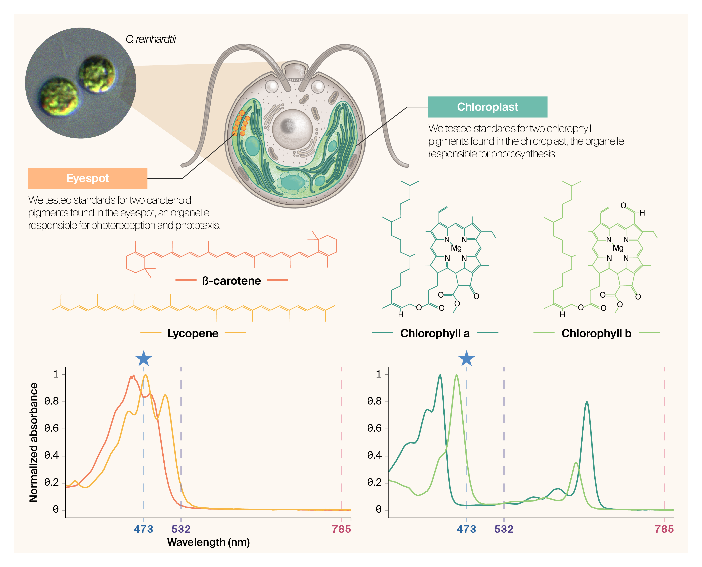

Introduction
At Arcadia, we’re interested in high-dimensional untargeted phenotyping that can be applied to a wide range of biological samples, from biomolecules to single cells to tissues. To this end, we’ve been using Raman spectroscopy on proteins (Bulow et al., 2026c), algae (Essock-Burns et al., 2025), yeast (Cheveralls et al., 2026), archaea (Braverman et al., 2025b), and more. We’ve explored two modalities of this technique: spontaneous and coherent. Spontaneous Raman spectroscopy, which requires only one laser and a reasonably simple setup, is a valuable technique to probe the dynamic chemistry of biological samples. When placed on a microscope, you can do point-by-point mapping. You can acquire a full spectrum at each point, which is helpful if you’re taking a more agnostic approach or looking for multiple different peaks. This differs from spectral imaging with a coherent Raman system, which acquires images at specific vibrational frequencies using two synchronized laser beams (Bulow et al., 2026a, 2026b). While coherent Raman microscopy typically offers more spatial context and can obtain a single image reasonably quickly, acquiring a full spectrum to search for peaks of interest takes longer. The two modalities can be used in a complementary manner.
We have a DIY spontaneous Raman system, two commercial spontaneous Raman systems, and one coherent Raman confocal microscope in-house. To date, we’ve mainly been using the spontaneous systems with simple focusing optics (lens or probe) (Braverman et al., 2025a), but we’ve also explored adding them to a wide-field Nikon microscope. In this study, we had demos of two commercial confocal spontaneous Raman systems, which enable high-resolution mapping. We acquired data on samples of living Chlamydomonas reinhardtii and Chlamydomonas smithii cells. We tested three excitation wavelengths: 473 nm, 532 nm, and 785 nm. We already have Raman systems with the latter two in-house and are interested in adding another line in the UV or blue range. Here, we share an analysis notebook that we used to visualize and analyze spectral and map data from both commercial systems. Our intent with this study is to explore the types of scientific questions that could be enabled with this combination of spatial and spectral information on biological samples.
We hope the notebook will be helpful to biologists interested in different types of spontaneous Raman microscopy for their samples, and to anyone interested in visualizing spectral map data from these commercial systems.
Background
In this study, we looked at the chemistry of single wild-type Chlamydomonas cells with three different excitation wavelengths. Chlamydomonas reinhardtii and Chlamydomonas smithii are two species of interest for Arcadia Science and have been part of our organism selection efforts (Avasthi et al., 2024). Chlamydomonas is a genus of unicellular green algae that are photosynthetic, have flagella, and are about 10 μm in size (Harris, 2001). Both species have strong structural and compositional similarities; C. reinhardtii is the more common model organism. Prior work involving Raman spectroscopy of this genus demonstrates that it can be used to detect light-harvesting pigments chlorophyll and carotenoids under different stress conditions (Pandey et al., 2022), lipid content and saturation (Sharma et al., 2015), starch content (Ji et al., 2014), and lipid/carbohydrate ratio (Chiu et al., 2017).
Specific organelles in the Chlamydomonas cell should give distinct and localized spectral signals based on their composition. For instance, chloroplasts should show clear pigment peaks (chlorophyll and carotenoids) in a cup-shaped formation; the eyespot should show up as strong carotenoid peaks concentrated on the side of the chloroplast, and starch granules may be detectable at different places in the cell body (Harris, 2001). What can actually be resolved depends not only on the spectral content but also on the imaging configuration: beam size, step size, objective magnification, and numerical aperture together set the spatial resolution achievable on the map.
The excitation wavelength matters because light of different energies interacts with samples differently. Scattering efficiency decreases as wavelength increases, so the same compound may produce weaker peaks under 785 nm than 532 nm. Near-infrared wavelengths can also avoid background fluorescence, which is useful with biological samples. Resonance enhancement is a separate effect: when the excitation wavelength overlaps the molecule’s absorption band, the Raman signal from that molecule can be orders of magnitude stronger. Carotenoids, for example, absorb between 450–520 nm, so they’re resonantly enhanced at 473, and to a lesser degree, at 532 nm excitation (Figure 1).
In this study, our goals were to:
- Evaluate whether we could use spontaneous Raman mapping to detect distinct biological structures (e.g., chloroplast)
- Understand which excitation wavelength yielded the most resolvable features, whether they had complementary information, and the pros and cons of each
- Explore data analysis methods useful for spatially resolved Raman data.

Caveats
Our aim was to evaluate the instruments and analysis methods for cell biology investigations, rather than conduct a controlled scientific investigation. Therefore, there are significant caveats to this dataset that preclude drawing strong scientific claims. We used the same species for the 473 nm and 532 nm excitation acquisitions, which were acquired on the same instrument on the same day. However, the focusing in z was different between the two acquisitions and they were on different cell clusters. The 785 nm data was acquired on a different instrument and species, on a different day, and we focused on a single cell rather than a cluster. Given that our interest was single-cell analysis to evaluate subcellular structure, we did detailed scans on few cells overall, so there is a low n. We also did not perform this on biological or technical replicates or across days.
Sample prep
We purchased commercial pigment standards for UV-vis spectrophotometry: beta-carotene (VWR, 99.0%), lycopene (VWR, ≥98.0%), chlorophyll a (Millipore Sigma, from Anacystis nidulans algae), and chlorophyll b (Millipore Sigma, ≥95.0%). We created solutions in acetone (100%), diluting as needed to avoid saturating the detector, and analyzed them in PMMA cuvettes.
We grew two wild-type strains of Chlamydomonas (C. reinhardtii CC-124, mating type −, and C. smithii) in a lawn on TAP (tris-acetate-phosphate) medium (UTEX) with 1.5% agar at room temperature, in a 12/12 h light–dark cycle. We prepared the samples for microscopy as described here.
Instrumentation
We used three different instruments for this study:
NanoDrop OneC, a spectrophotometer with a cuvette configuration, to collect the UV-visible spectra. The instrument has a wavelength range of 190–850 nm and an accuracy of ±1 nm. More information about the system is here.
Horiba LabRAM Evolution, a confocal spontaneous Raman system, to collect Raman spectra on cells on a glass slide with coverslip. This system has two different stages; we used the mapping stage with the optical microscope, 100× objective, and 473 nm and 532 nm excitation. We used the following parameters for all samples: 0.4 s exposure, 50 accumulations, and a 300 grooves/mm grating. The laser power was 1.3 mW at 473 nm and 1.74 mW at 532 nm. More information about the system can be found here. We centered on a group of four CC-124 cells grown on TAP medium and mapped them with a confocal beam size of ~1 μm and a step size of ~0.5 μm. Because the step size is smaller than the beam, adjacent points overlap and the map is oversampled. This instrument was operated by Andrey Krayev in Novato, CA.
Renishaw inVia Qontor, a confocal spontaneous Raman system with a mapping stage, to collect Raman spectra on cells on a glass slide with coverslip. We used a 50× LWD Leica objective, 785 nm excitation at 10% power setting (16.3 mW at the sample), and the following parameters for all samples: 1 s exposure, one accumulation, and a 1200 grooves/mm grating. More information about the system can be found here. We centered on a single CC-1373 cell and mapped it with a beam size of ~2 μm. This instrument was operated by Sarah Shidler in Berkeley, CA.
UV-Vis absorbance of pigment standards
The pigment absorbance spectra show where each molecule absorbs light most strongly, which informs where resonance Raman enhancement may occur (Figure 2). Carotenoids (β-carotene, lycopene) absorb broadly between ~420–520 nm, with peak absorption near 450–480 nm. Both the 473 nm and 532 nm laser lines fall within or near this window, predicting resonance enhancement of carotenoid Raman signals under both excitation wavelengths. The 473 nm line sits closer to the β-carotene absorption maximum, suggesting potentially stronger enhancement. Chlorophylls a and b have Soret absorption bands near 430–435 nm and Q-band absorption near 640–680 nm (Croce et al., 2000). None of the three excitation wavelengths closely overlap these transitions, so chlorophyll peaks are not expected to be resonantly enhanced. The 785 nm laser is well outside the absorption bands of all four pigments, so all Raman signals at this wavelength reflect non-resonant scattering and are expected to be weaker relative to carotenoid signals seen at the shorter wavelengths.
Source code for this figure:
import arcadia_pycolor as apc
import matplotlib.colors as mcolors
import matplotlib.pyplot as plt
import numpy as np
import pandas as pd
import plotly.graph_objects as go
import scipy.signal
from IPython.display import Markdown
from matplotlib.colors import ListedColormap
from plotly.subplots import make_subplots
from pybaselines.whittaker import airpls
from sklearn.decomposition import NMF, PCA
apc.plotly.setup()
apc.mpl.setup()
plt.rcParams["savefig.dpi"] = 80
plt.rcParams["figure.dpi"] = 80
# Step 1: Read the TSV manually
def import_tsv(file_path):
with open(file_path) as f:
lines = [line.strip().split("\t") for line in f if line.strip()]
df = pd.DataFrame(lines)
return df
# Step 2: Extract sample blocks and names
def split_uv_vis_data(df):
split_indices = df.index[df.iloc[:, 0] == "Wavelength (nm)"].tolist()
split_dfs = []
labels = []
for i in range(len(split_indices)):
header_idx = split_indices[i]
sample_name = df.iloc[header_idx - 2, 0] # sample name is two rows above header
start_idx = header_idx + 1
end_idx = split_indices[i + 1] - 3 if i + 1 < len(split_indices) else len(df)
headers = df.iloc[header_idx]
data = df.iloc[start_idx : end_idx + 1].copy()
data.columns = headers
split_dfs.append(data)
labels.append(sample_name)
return split_dfs, labels
# Step 3a: Combined plot with Plotly
def plot_all_spectra_plotly(dfs, labels):
fig = go.Figure()
for df, label in zip(dfs, labels, strict=False):
df = df.dropna()
df = df.apply(pd.to_numeric, errors="coerce")
fig.add_trace(
go.Scatter(
x=df["Wavelength (nm)"],
y=df.iloc[:, 1],
mode="lines",
name=label,
)
)
fig.update_layout(
xaxis_title="Wavelength (nm)",
yaxis_title="Absorbance",
xaxis_range=[350, 800],
paper_bgcolor=apc.parchment,
plot_bgcolor=apc.parchment,
width=800,
height=400,
)
apc.plotly.style_plot(fig, monospaced_axes="xy")
fig.show()
# ---- Main Execution ----
file_path = "data/UV-Vis 5_1_2025 7_19_21 PM.tsv"
uv_vis_raw = import_tsv(file_path)
split_uv_vis, sample_labels = split_uv_vis_data(uv_vis_raw)
plot_all_spectra_plotly(split_uv_vis, sample_labels)Raman microscopy of live Chlamydomonas cells
Each dataset we acquired contained spectral data across a range of wavenumbers and xy positional data.
Initial spectral plot comparison
First, let’s plot the data from each experiment individually (Figure 3). We can visually identify similarities and differences between the spectra and find specific Raman shift values that could be biological markers.
We’ll start with 473 nm data from the Horiba LabRAM Evolution. This map has 1,073 points and covers four cells and white space between and around them. We can apply a gentle median filter to remove some of the noise, which can arise from detector noise or cosmic rays. Each figure in this section has median-filtered Raman data (kernel size = 5).
Source code for this figure:
# Load Horiba 473 data
blue_path = "data/Cells- 473nm-Map-ForPeng 1.txt"
blue_data = pd.read_csv(blue_path, sep="\t")
# Rename first two columns to x and y positions
blue_data = blue_data.rename(columns={"Unnamed: 0": "x_pos", "Unnamed: 1": "y_pos"})
# Separate the data into two dataframes, one for xy positions and one for intensity values
blue_xy = blue_data[["x_pos", "y_pos"]]
blue_intensity = blue_data.drop(columns=["x_pos", "y_pos"])
blue_num_points = len(blue_xy)
# Flip the intensity dataframe horizontally and convert column names to float
blue_intensity = blue_intensity.iloc[:, ::-1]
blue_intensity.columns = blue_intensity.columns.astype(float)
# Crop the intensity data to only include Raman shifts between 300 and 3600 cm-1
blue_intensity = blue_intensity.loc[
:, (blue_intensity.columns >= 300) & (blue_intensity.columns <= 3600)
]
# Apply a median filter to the intensity data
blue_intensity_filt = blue_intensity.apply(lambda x: scipy.signal.medfilt(x, kernel_size=5))
# Plot spectra in blue_intensity_filt using matplotlib
fig, ax = plt.subplots(
figsize=(10, 5),
constrained_layout=True,
# dpi=300,
facecolor=apc.parchment,
)
colors = apc.palettes.blue_shades.colors
for i in range(len(blue_intensity_filt)):
ax.plot(
blue_intensity_filt.columns,
blue_intensity_filt.iloc[i],
label=f"Point {i + 1}",
color=colors[i % len(colors)],
)
ax.set_xlabel("Raman shift (cm$^{-1}$)")
ax.set_ylabel("Intensity")
apc.mpl.style_plot(monospaced_axes="both")
ax.set_facecolor(apc.parchment)
plt.show()The most intense peaks are at ~1155, ~1525, and ~2650 cm-1. Some spectra have minor peaks at ~1005, between 2200-2500, and ~3100 cm-1. Even with no baseline removal applied to the spectra, there’s only a bit of fluorescence, which causes the baseline to rise. It’s also apparent that some points have no signal, which is expected given that many positions didn’t hit a cell.
Let’s make a similar plot with the 532 nm data from the Horiba LabRAM Evolution on another group of cells from the same slide, with a differently sized map of 873 points (Figure 4).
Source code for this figure:
# Load Horiba 532 data
green_path = "data/Cells- 532nm-Map-ForPeng 1.txt"
green_data = pd.read_csv(green_path, sep="\t")
# Rename first two columns to x and y positions
green_data = green_data.rename(columns={"Unnamed: 0": "x_pos", "Unnamed: 1": "y_pos"})
# Separate the data into two dataframes, one for xy positions and one for intensity values
green_xy = green_data[["x_pos", "y_pos"]]
green_intensity = green_data.drop(columns=["x_pos", "y_pos"])
green_num_points = len(green_xy)
# Flip the intensity dataframe horizontally and convert column names to float
green_intensity = green_intensity.iloc[:, ::-1]
green_intensity.columns = green_intensity.columns.astype(float)
# Crop the intensity data to only include Raman shifts between 300 and 3600 cm-1
green_intensity = green_intensity.loc[
:, (green_intensity.columns >= 300) & (green_intensity.columns <= 3600)
]
# Apply a median filter to the intensity data
green_intensity_filt = green_intensity.apply(lambda x: scipy.signal.medfilt(x, kernel_size=5))
# Plot spectra in green_intensity using matplotlib; x values are the header row of green_intensity
fig, ax = plt.subplots(
figsize=(10, 5),
constrained_layout=True,
# dpi=300,
facecolor=apc.parchment,
)
colors = apc.palettes.green_shades.colors
for i in range(len(green_intensity_filt)):
ax.plot(
green_intensity_filt.columns,
green_intensity_filt.iloc[i],
label=f"Point {i + 1}",
color=colors[i % len(colors)],
)
ax.set_xlabel("Raman shift (cm$^{-1}$)")
ax.set_ylabel("Intensity")
apc.mpl.style_plot(monospaced_axes="both")
ax.set_facecolor(apc.parchment)
plt.show()Looking at the spectra, the most intense peaks are at ~1005, ~1155, and ~1525 cm-1. Minor peaks are hard to discern, though there’s possibly a shoulder on the 1155 peak. Fluorescence in this case appears at the tail end of the spectra, increasing beyond 2500 cm-1.
Let’s make a similar plot with the 785 nm data from the Renishaw inVia Qontor (Figure 5). In this case, we mapped a single C. smithii CC-1373 cell with a more limited spectral range for a quicker acquisition.
Source code for this figure:
# Load Renishaw 785 data - LONG FORMAT
red_path = "data/2024-11-12_CC-1373_TAP_slide_10_singlecellmap.txt"
# Read with only the first 4 columns (X, Y, Wave, Intensity)
df = pd.read_csv(
red_path, sep="\t", usecols=[0, 1, 2, 3], names=["X", "Y", "Wave", "Intensity"], skiprows=1
)
# Get unique Raman shifts
raman_shifts = sorted(df["Wave"].unique())
# Pivot to wide format: rows = spatial points, columns = Raman shifts
data_wide = df.pivot_table(index=["X", "Y"], columns="Wave", values="Intensity", aggfunc="first")
data_wide = data_wide.reset_index()
# Extract spatial positions AFTER pivoting to ensure correct order
red_xy = data_wide[["X", "Y"]].copy()
red_num_points = len(red_xy)
# Extract intensity columns
red_intensity_restructured = data_wide.drop(columns=["X", "Y"])
red_intensity_restructured.columns = red_intensity_restructured.columns.astype(float)
# Flip to match Horiba orientation (high to low wavenumber)
red_intensity_restructured = red_intensity_restructured.iloc[:, ::-1]
# Apply a median filter to the intensity data
red_intensity_filt = red_intensity_restructured.apply(
lambda x: scipy.signal.medfilt(x, kernel_size=5)
)
# Plot spectra using matplotlib
fig, ax = plt.subplots(figsize=(10, 5), constrained_layout=True, facecolor=apc.parchment)
colors = apc.palettes.red_shades.colors
for i in range(len(red_intensity_filt)):
ax.plot(
red_intensity_filt.columns,
red_intensity_filt.iloc[i],
label=f"Point {i + 1}",
color=colors[i % len(colors)],
)
ax.set_xlabel("Raman shift (cm$^{-1}$)")
ax.set_ylabel("Intensity")
apc.mpl.style_plot(monospaced_axes="both")
ax.set_facecolor(apc.parchment)
plt.show()Looking at the 785 spectra, there’s a bump around 1400 cm-1 due to the light interacting with the glass slide (Fikiet et al., 2019). You can still see peaks at ~1155 and ~1525 cm-1, though they may be less intense than in the other wavelengths.
Even without applying baseline correction or normalization, it’s clear that there are real Raman peaks in every dataset. Across all three wavelengths, we see some common peaks at ~1155 and 1525 cm-1. This combination matches well with C–C stretching and C=C stretching modes of carotenoids, which would be expected in photosynthetic algae [pandey2022microraman]. The 473 nm spectra have the greatest number of peaks distinguishable by eye, followed by 532 nm and then 785 nm. This is consistent with carotenoid resonance enhancement, since carotenoids absorb 473 nm light well (Figure 1), which boosts their signal relative to the longer wavelengths (Croce et al., 2000).
Initial spectral map comparison
To better explore the data and find spatial hot spots, we can present the data differently. Each file contains x, y positional data for the point at which a spectrum was taken, which can be plotted to generate an interactive spectral map (Figure 6, Figure 7, Figure 8). Scrolling through the Raman shift space then shows the intensity of each map point at a specific wavenumber. The size of the points in the plot doesn’t reflect the beam size of the spectrometer, and the spacing isn’t to scale.
Source code for this figure:
with open(blue_path) as f:
header_line = f.readline().strip().split()
raman_shifts = [float(val) for val in header_line]
data = pd.read_csv(blue_path, sep=r"\s+", skiprows=1, header=None)
data = data.rename(columns={0: "x", 1: "y"})
# Rename intensity columns to match raman_shifts
intensity_columns = {i + 2: raman_shifts[i] for i in range(len(raman_shifts))}
data = data.rename(columns=intensity_columns)
# Crop to fingerprint + high-wavenumber region
allowed_cols = [s for s in raman_shifts if 300 <= s <= 3600]
df_long = data.melt(
id_vars=["x", "y"], value_vars=allowed_cols, var_name="raman_shift", value_name="intensity"
)
df_long["raman_shift"] = df_long["raman_shift"].astype(float)
df_long["intensity"] = pd.to_numeric(df_long["intensity"], errors="coerce")
df_long = df_long.sort_values(by="raman_shift")
mean_spec = df_long.groupby("raman_shift", as_index=False)["intensity"].mean()
unique_shifts = sorted(df_long["raman_shift"].unique())
# Convert colorscale once, not per frame, for performance
magma_colorscale = apc.gradients.magma.to_plotly_colorscale()
# Two-row figure: spatial map on top, mean spectrum below
fig = make_subplots(rows=2, cols=1, row_heights=[0.65, 0.35], vertical_spacing=0.15)
x_full = data["x"]
y_full = data["y"]
# Initial frame
init_shift = unique_shifts[0]
init_col = init_shift
intensity_init = data[init_col]
map_trace = go.Scatter(
x=x_full,
y=y_full,
mode="markers",
marker=dict(
size=10,
color=intensity_init,
colorscale=magma_colorscale,
colorbar=dict(title=dict(text="Intensity"), tickfont=dict(color="black")),
),
name="Spectral map of Chlamydomonas cells (473 nm)",
)
fig.add_trace(map_trace, row=1, col=1)
mean_trace = go.Scatter(
x=mean_spec["raman_shift"],
y=mean_spec["intensity"],
mode="lines",
line=dict(color="black"),
name="Mean spectrum",
)
fig.add_trace(mean_trace, row=2, col=1)
# Vertical indicator line on mean spectrum at current shift
if init_shift != 0:
init_line = dict(
type="line",
x0=init_shift,
x1=init_shift,
y0=mean_spec["intensity"].min(),
y1=mean_spec["intensity"].max(),
line=dict(color="black", width=2),
opacity=0.5,
xref="x2",
yref="y2",
)
fig.update_layout(shapes=[init_line])
# Animation frames
frames = []
for shift in unique_shifts:
intensity_vals = data[shift]
shapes_list = []
if shift != 0:
shapes_list = [
dict(
type="line",
x0=shift,
x1=shift,
y0=mean_spec["intensity"].min(),
y1=mean_spec["intensity"].max(),
line=dict(color="black", width=2),
opacity=0.5,
xref="x2",
yref="y2",
)
]
frame = go.Frame(
data=[
go.Scatter(
x=x_full, y=y_full, marker=dict(color=intensity_vals, colorscale=magma_colorscale)
),
go.Scatter(
x=mean_spec["raman_shift"],
y=mean_spec["intensity"],
mode="lines",
line=dict(color="black"),
),
],
layout=dict(shapes=shapes_list),
name=str(shift),
)
frames.append(frame)
fig.frames = frames
# Slider
slider_steps = []
for shift in unique_shifts:
step = dict(
method="animate",
args=[
[str(shift)],
dict(
mode="immediate", frame=dict(duration=100, redraw=True), transition=dict(duration=0)
),
],
label=str(round(shift, 1)),
)
slider_steps.append(step)
fig.update_layout(
sliders=[
dict(
active=0,
currentvalue=dict(prefix="Raman shift (cm⁻¹): "),
pad={"t": 10},
steps=slider_steps,
x=0,
y=-0.1,
len=1,
)
],
width=800,
height=1200,
showlegend=False,
plot_bgcolor="black",
paper_bgcolor="#FDF8F2",
font=dict(family="Helvetica Neue", color="black"),
)
# Spatial map axes (row 1)
x_min = data["x"].min()
x_max = data["x"].max()
y_min = data["y"].min()
y_max = data["y"].max()
fig.update_xaxes(
row=1,
col=1,
showgrid=False,
showline=True,
linewidth=1,
linecolor="black",
title="X (μm)",
range=[x_min, x_max],
)
fig.update_yaxes(
row=1,
col=1,
showgrid=False,
showline=True,
linewidth=1,
linecolor="black",
title="Y (μm)",
range=[y_min, y_max],
)
# Mean spectrum axes (row 2)
fig.update_xaxes(
row=2,
col=1,
showgrid=False,
showline=True,
linewidth=1,
linecolor="black",
title="Raman shift (cm⁻¹)",
)
fig.update_yaxes(
row=2,
col=1,
showgrid=False,
showline=True,
linewidth=1,
linecolor="black",
title="Mean intensity",
)
fig.update_xaxes(row=1, col=1, scaleanchor="y", scaleratio=1)
# Plotly doesn't support per-subplot bg color, so add a rectangle behind row 2
x2_domain = fig.layout.xaxis2.domain
y2_domain = fig.layout.yaxis2.domain
fig.add_shape(
type="rect",
xref="paper",
yref="paper",
x0=x2_domain[0],
x1=x2_domain[1],
y0=y2_domain[0],
y1=y2_domain[1] + 0.02,
fillcolor="#FDF8F2",
layer="below",
line_width=0,
)
apc.plotly.style_plot(fig, monospaced_axes="all")
apc.plotly.style_legend(fig)
apc.plotly.add_commas_to_axis_tick_labels(fig)
fig.show()Source code for this figure:
with open(green_path) as f:
header_line = f.readline().strip().split()
raman_shifts = [float(val) for val in header_line]
data = pd.read_csv(green_path, sep=r"\s+", skiprows=1, header=None)
data = data.rename(columns={0: "x", 1: "y"})
# Rename intensity columns to match raman_shifts
intensity_columns = {i + 2: raman_shifts[i] for i in range(len(raman_shifts))}
data = data.rename(columns=intensity_columns)
# Crop to fingerprint + high-wavenumber region
allowed_cols = [s for s in raman_shifts if 300 <= s <= 3600]
df_long = data.melt(
id_vars=["x", "y"], value_vars=allowed_cols, var_name="raman_shift", value_name="intensity"
)
df_long["raman_shift"] = df_long["raman_shift"].astype(float)
df_long["intensity"] = pd.to_numeric(df_long["intensity"], errors="coerce")
df_long = df_long.sort_values(by="raman_shift")
mean_spec = df_long.groupby("raman_shift", as_index=False)["intensity"].mean()
unique_shifts = sorted(df_long["raman_shift"].unique())
# Convert colorscale once, not per frame, for performance
magma_colorscale = apc.gradients.magma.to_plotly_colorscale()
# Two-row figure: spatial map on top, mean spectrum below
fig = make_subplots(rows=2, cols=1, row_heights=[0.65, 0.35], vertical_spacing=0.15)
x_full = data["x"]
y_full = data["y"]
# Initial frame
init_shift = unique_shifts[0]
init_col = init_shift
intensity_init = data[init_col]
map_trace = go.Scatter(
x=x_full,
y=y_full,
mode="markers",
marker=dict(
size=10,
color=intensity_init,
colorscale=magma_colorscale,
colorbar=dict(title=dict(text="Intensity"), tickfont=dict(color="black")),
),
name="Spectral map of Chlamydomonas cells (532 nm)",
)
fig.add_trace(map_trace, row=1, col=1)
mean_trace = go.Scatter(
x=mean_spec["raman_shift"],
y=mean_spec["intensity"],
mode="lines",
line=dict(color="black"),
name="Mean spectrum",
)
fig.add_trace(mean_trace, row=2, col=1)
# Vertical indicator line on mean spectrum at current shift
if init_shift != 0:
init_line = dict(
type="line",
x0=init_shift,
x1=init_shift,
y0=mean_spec["intensity"].min(),
y1=mean_spec["intensity"].max(),
line=dict(color="black", width=2),
opacity=0.5,
xref="x2",
yref="y2",
)
fig.update_layout(shapes=[init_line])
# Animation frames
frames = []
for shift in unique_shifts:
intensity_vals = data[shift]
shapes_list = []
if shift != 0:
shapes_list = [
dict(
type="line",
x0=shift,
x1=shift,
y0=mean_spec["intensity"].min(),
y1=mean_spec["intensity"].max(),
line=dict(color="black", width=2),
opacity=0.5,
xref="x2",
yref="y2",
)
]
frame = go.Frame(
data=[
go.Scatter(
x=x_full, y=y_full, marker=dict(color=intensity_vals, colorscale=magma_colorscale)
),
go.Scatter(
x=mean_spec["raman_shift"],
y=mean_spec["intensity"],
mode="lines",
line=dict(color="black"),
),
],
layout=dict(shapes=shapes_list),
name=str(shift),
)
frames.append(frame)
fig.frames = frames
# Slider
slider_steps = []
for shift in unique_shifts:
step = dict(
method="animate",
args=[
[str(shift)],
dict(
mode="immediate", frame=dict(duration=100, redraw=True), transition=dict(duration=0)
),
],
label=str(round(shift, 1)),
)
slider_steps.append(step)
fig.update_layout(
sliders=[
dict(
active=0,
currentvalue=dict(prefix="Raman shift (cm⁻¹): "),
pad={"t": 10},
steps=slider_steps,
x=0,
y=-0.1,
len=1,
)
],
width=800,
height=1200,
showlegend=False,
plot_bgcolor="black",
paper_bgcolor="#FDF8F2",
font=dict(family="Helvetica Neue", color="black"),
)
# Spatial map axes (row 1)
x_min = data["x"].min()
x_max = data["x"].max()
y_min = data["y"].min()
y_max = data["y"].max()
fig.update_xaxes(
row=1,
col=1,
showgrid=False,
showline=True,
linewidth=1,
linecolor="black",
title="X (μm)",
range=[x_min, x_max],
)
fig.update_yaxes(
row=1,
col=1,
showgrid=False,
showline=True,
linewidth=1,
linecolor="black",
title="Y (μm)",
range=[y_min, y_max],
)
# Mean spectrum axes (row 2)
fig.update_xaxes(
row=2,
col=1,
showgrid=False,
showline=True,
linewidth=1,
linecolor="black",
title="Raman shift (cm⁻¹)",
)
fig.update_yaxes(
row=2,
col=1,
showgrid=False,
showline=True,
linewidth=1,
linecolor="black",
title="Mean intensity",
)
fig.update_xaxes(row=1, col=1, scaleanchor="y", scaleratio=1)
# Plotly doesn't support per-subplot bg color, so add a rectangle behind row 2
x2_domain = fig.layout.xaxis2.domain
y2_domain = fig.layout.yaxis2.domain
fig.add_shape(
type="rect",
xref="paper",
yref="paper",
x0=x2_domain[0],
x1=x2_domain[1],
y0=y2_domain[0],
y1=y2_domain[1] + 0.02,
fillcolor="#FDF8F2",
layer="below",
line_width=0,
)
apc.plotly.style_plot(fig, monospaced_axes="all")
apc.plotly.style_legend(fig)
apc.plotly.add_commas_to_axis_tick_labels(fig)
fig.show()Source code for this figure:
# Renishaw 785 nm data is in long format (X, Y, Wave, Intensity), unlike Horiba wide format
df = pd.read_csv(
red_path, sep="\t", usecols=[0, 1, 2, 3], names=["X", "Y", "Wave", "Intensity"], skiprows=1
)
xy_unique = df[["X", "Y"]].drop_duplicates().reset_index(drop=True)
red_num_points = len(xy_unique)
raman_shifts = sorted(df["Wave"].unique())
# Pivot long -> wide so downstream code matches the Horiba data
data_wide = df.pivot_table(index=["X", "Y"], columns="Wave", values="Intensity", aggfunc="first")
data_wide = data_wide.reset_index()
data = data_wide.rename(columns={"X": "x", "Y": "y"})
allowed_cols = [s for s in raman_shifts if 300 <= s <= 3600]
df_long = data.melt(
id_vars=["x", "y"], value_vars=allowed_cols, var_name="raman_shift", value_name="intensity"
)
df_long["raman_shift"] = df_long["raman_shift"].astype(float)
df_long["intensity"] = pd.to_numeric(df_long["intensity"], errors="coerce")
df_long = df_long.sort_values(by="raman_shift")
mean_spec = df_long.groupby("raman_shift", as_index=False)["intensity"].mean()
unique_shifts = sorted(df_long["raman_shift"].unique())
magma_colorscale = apc.gradients.magma.to_plotly_colorscale()
# Two-row figure: spatial map on top, mean spectrum below
fig = make_subplots(rows=2, cols=1, row_heights=[0.65, 0.35], vertical_spacing=0.15)
x_full = data["x"]
y_full = data["y"]
# Initial frame
init_shift = unique_shifts[0]
init_col = init_shift
intensity_init = data[init_col]
map_trace = go.Scatter(
x=x_full,
y=y_full,
mode="markers",
marker=dict(
size=10,
color=intensity_init,
colorscale=magma_colorscale,
colorbar=dict(title=dict(text="Intensity"), tickfont=dict(color="black")),
),
name="Spectral map of Chlamydomonas cells (785 nm)",
)
fig.add_trace(map_trace, row=1, col=1)
mean_trace = go.Scatter(
x=mean_spec["raman_shift"],
y=mean_spec["intensity"],
mode="lines",
line=dict(color="black"),
name="Mean spectrum",
)
fig.add_trace(mean_trace, row=2, col=1)
# Vertical indicator line on mean spectrum at current shift
if init_shift != 0:
init_line = dict(
type="line",
x0=init_shift,
x1=init_shift,
y0=mean_spec["intensity"].min(),
y1=mean_spec["intensity"].max(),
line=dict(color="black", width=2),
opacity=0.5,
xref="x2",
yref="y2",
)
fig.update_layout(shapes=[init_line])
# Animation frames
frames = []
for shift in unique_shifts:
intensity_vals = data[shift]
shapes_list = []
if shift != 0:
shapes_list = [
dict(
type="line",
x0=shift,
x1=shift,
y0=mean_spec["intensity"].min(),
y1=mean_spec["intensity"].max(),
line=dict(color="black", width=2),
opacity=0.5,
xref="x2",
yref="y2",
)
]
frame = go.Frame(
data=[
go.Scatter(
x=x_full, y=y_full, marker=dict(color=intensity_vals, colorscale=magma_colorscale)
),
go.Scatter(
x=mean_spec["raman_shift"],
y=mean_spec["intensity"],
mode="lines",
line=dict(color="black"),
),
],
layout=dict(shapes=shapes_list),
name=str(shift),
)
frames.append(frame)
fig.frames = frames
# Slider
slider_steps = []
for shift in unique_shifts:
step = dict(
method="animate",
args=[
[str(shift)],
dict(
mode="immediate", frame=dict(duration=100, redraw=True), transition=dict(duration=0)
),
],
label=str(round(shift, 1)),
)
slider_steps.append(step)
fig.update_layout(
sliders=[
dict(
active=0,
currentvalue=dict(prefix="Raman shift (cm⁻¹): "),
pad={"t": 10},
steps=slider_steps,
x=0,
y=-0.1,
len=1,
)
],
width=800,
height=1200,
showlegend=False,
plot_bgcolor="black",
paper_bgcolor="#FDF8F2",
font=dict(family="Helvetica Neue", color="black"),
)
# Spatial map axes (row 1)
x_min = data["x"].min()
x_max = data["x"].max()
y_min = data["y"].min()
y_max = data["y"].max()
fig.update_xaxes(
row=1,
col=1,
showgrid=False,
showline=True,
linewidth=1,
linecolor="black",
title="X (μm)",
range=[x_min, x_max],
)
fig.update_yaxes(
row=1,
col=1,
showgrid=False,
showline=True,
linewidth=1,
linecolor="black",
title="Y (μm)",
range=[y_min, y_max],
)
# Mean spectrum axes (row 2)
fig.update_xaxes(
row=2,
col=1,
showgrid=False,
showline=True,
linewidth=1,
linecolor="black",
title="Raman shift (cm⁻¹)",
)
fig.update_yaxes(
row=2,
col=1,
showgrid=False,
showline=True,
linewidth=1,
linecolor="black",
title="Mean intensity",
)
fig.update_xaxes(row=1, col=1, scaleanchor="y", scaleratio=1)
# Plotly doesn't support per-subplot bg color, so add a rectangle behind row 2
x2_domain = fig.layout.xaxis2.domain
y2_domain = fig.layout.yaxis2.domain
fig.add_shape(
type="rect",
xref="paper",
yref="paper",
x0=x2_domain[0],
x1=x2_domain[1],
y0=y2_domain[0],
y1=y2_domain[1] + 0.02,
fillcolor="#FDF8F2",
layer="below",
line_width=0,
)
apc.plotly.style_plot(fig, monospaced_axes="all")
apc.plotly.style_legend(fig)
apc.plotly.add_commas_to_axis_tick_labels(fig)
fig.show()Each map shows spatial heterogeneity across the cell(s), with hot spots especially evident in the 473 nm data. When the scrollbar is placed at a wavenumber where Raman peaks appear, some hot spots start to show clearer structure suggesting distinct cellular components.
Data pre-processing
While the initial spectral plots and maps are already illuminating, two refinement steps improve the quality of downstream analysis. First, intensity-based spatial masking removes background points (map positions that didn’t intersect a cell), so that subsequent analysis isn’t diluted by off-cell signal. Second, baseline correction removes broad fluorescence contributions that ride underneath the Raman peaks, making peak positions and relative intensities more accurate and comparable across wavelengths.
Cell masking with intensity thresholding
To improve our analysis, we need to separate spatial points that are “on-cell” from background points. We’ll use simple intensity thresholding based on mean intensity across the spectrum. This approach is interpretable and works well when cells have consistently higher signal than background. Thresholds were set at the 42nd, 30th, and 40th percentile of mean intensity for the 473 nm (Figure 9), 532 nm (Figure 10), and 785 nm datasets (Figure 11), respectively, chosen by visual inspection of the resulting masks to retain clearly on-cell points while excluding background. The higher threshold for the 785 nm dataset reflects its stronger fluorescence background, which raises the mean intensity of background points relative to the other datasets.
Source code for this figure:
# Assign arcadia_pycolor colors
apc_473 = apc.aegean
apc_532 = apc.lime
apc_785 = apc.dragon
# Create diverging colormap for binary masks (off-cell to on-cell)
binary_cmap = ListedColormap([apc.slate, apc.vital])
# Calculate mean intensity for each spatial point
mean_intensity_473 = blue_intensity_filt.mean(axis=1)
mean_intensity_532 = green_intensity_filt.mean(axis=1)
mean_intensity_785 = red_intensity_filt.mean(axis=1)
# Calculate threshold (42nd percentile)
threshold_473 = np.percentile(mean_intensity_473, 42)
mask_473 = mean_intensity_473 > threshold_473
# Create 2-panel figure (1000px = 10 inches at 100 DPI)
fig, (ax_spatial, ax_mask) = plt.subplots(1, 2, figsize=(10, 5), facecolor=apc.parchment)
# a - Spatial intensity map
scatter = ax_spatial.scatter(
blue_xy["x_pos"],
blue_xy["y_pos"],
c=mean_intensity_473,
cmap=apc.gradients.viridis.to_mpl_cmap(),
s=30,
alpha=0.7,
)
ax_spatial.set_xlabel("X (μm)")
ax_spatial.set_ylabel("Y (μm)")
ax_spatial.set_aspect("equal")
cbar = plt.colorbar(scatter, ax=ax_spatial, fraction=0.046, pad=0.04)
cbar.set_label("Mean intensity")
ax_spatial.set_facecolor(apc.parchment)
ax_spatial.text(
-0.15, 1.05, "a", transform=ax_spatial.transAxes, fontsize=18, fontweight="bold", va="top"
)
apc.mpl.style_plot(monospaced_axes="both")
# b - Binary mask
ax_mask.scatter(blue_xy["x_pos"], blue_xy["y_pos"], c=mask_473, cmap=binary_cmap, s=30, alpha=0.7)
ax_mask.set_aspect("equal")
ax_mask.set_facecolor(apc.parchment)
ax_mask.text(
-0.15, 1.05, "b", transform=ax_mask.transAxes, fontsize=18, fontweight="bold", va="top"
)
apc.mpl.style_plot(monospaced_axes="both")
plt.tight_layout()
plt.savefig("assets/fig-masking-473nm.pdf", bbox_inches="tight", dpi=300)
plt.show()
# Create masked datasets for downstream analysis
blue_intensity_masked = blue_intensity_filt[mask_473]
blue_xy_masked = blue_xy[mask_473].reset_index(drop=True)
cell_473 = blue_intensity_masked.values
mean_473 = pd.Series(cell_473.mean(axis=0), index=blue_intensity_filt.columns)Source code for this figure:
# Calculate threshold (30th percentile)
threshold_532 = np.percentile(mean_intensity_532, 30)
mask_532 = mean_intensity_532 > threshold_532
# Create 2-panel figure (1000px = 10 inches at 100 DPI)
fig, (ax_spatial, ax_mask) = plt.subplots(1, 2, figsize=(10, 5), facecolor=apc.parchment)
# a - Spatial intensity map
scatter = ax_spatial.scatter(
green_xy["x_pos"],
green_xy["y_pos"],
c=mean_intensity_532,
cmap=apc.gradients.viridis.to_mpl_cmap(),
s=30,
alpha=0.7,
)
ax_spatial.set_xlabel("X (μm)")
ax_spatial.set_ylabel("Y (μm)")
ax_spatial.set_aspect("equal")
cbar = plt.colorbar(scatter, ax=ax_spatial, fraction=0.046, pad=0.04)
cbar.set_label("Mean intensity")
ax_spatial.set_facecolor(apc.parchment)
ax_spatial.text(
-0.15, 1.05, "a", transform=ax_spatial.transAxes, fontsize=18, fontweight="bold", va="top"
)
apc.mpl.style_plot(monospaced_axes="both")
# b - Binary mask
ax_mask.scatter(green_xy["x_pos"], green_xy["y_pos"], c=mask_532, cmap=binary_cmap, s=30, alpha=0.7)
ax_mask.set_aspect("equal")
ax_mask.set_facecolor(apc.parchment)
ax_mask.text(
-0.15, 1.05, "b", transform=ax_mask.transAxes, fontsize=18, fontweight="bold", va="top"
)
apc.mpl.style_plot(monospaced_axes="both")
plt.tight_layout()
plt.savefig("assets/fig-masking-532nm.pdf", bbox_inches="tight", dpi=300)
plt.show()
# Create masked datasets for downstream analysis
green_intensity_masked = green_intensity_filt[mask_532]
green_xy_masked = green_xy[mask_532].reset_index(drop=True)
cell_532 = green_intensity_masked.values
mean_532 = pd.Series(cell_532.mean(axis=0), index=green_intensity_filt.columns)Source code for this figure:
# Calculate threshold (40th percentile)
threshold_785 = np.percentile(mean_intensity_785, 40)
mask_785 = mean_intensity_785 > threshold_785
# Create 2-panel figure (1000px = 10 inches at 100 DPI)
fig, (ax_spatial, ax_mask) = plt.subplots(1, 2, figsize=(10, 5), facecolor=apc.parchment)
# a - Spatial intensity map
scatter = ax_spatial.scatter(
red_xy["X"],
red_xy["Y"],
c=mean_intensity_785,
cmap=apc.gradients.viridis.to_mpl_cmap(),
s=30,
alpha=0.7,
)
ax_spatial.set_xlabel("X (μm)")
ax_spatial.set_ylabel("Y (μm)")
ax_spatial.set_aspect("equal")
cbar = plt.colorbar(scatter, ax=ax_spatial, fraction=0.046, pad=0.04)
cbar.set_label("Mean intensity")
ax_spatial.set_facecolor(apc.parchment)
ax_spatial.text(
-0.15, 1.05, "a", transform=ax_spatial.transAxes, fontsize=18, fontweight="bold", va="top"
)
apc.mpl.style_plot(monospaced_axes="both")
# b - Binary mask
ax_mask.scatter(red_xy["X"], red_xy["Y"], c=mask_785, cmap=binary_cmap, s=30, alpha=0.7)
ax_mask.set_aspect("equal")
ax_mask.set_facecolor(apc.parchment)
ax_mask.text(
-0.15, 1.05, "b", transform=ax_mask.transAxes, fontsize=18, fontweight="bold", va="top"
)
apc.mpl.style_plot(monospaced_axes="both")
plt.tight_layout()
plt.savefig("assets/fig-masking-785nm.pdf", bbox_inches="tight", dpi=300)
plt.show()
# Create masked datasets for downstream analysis
red_intensity_masked = red_intensity_filt[mask_785]
red_xy_masked = red_xy[mask_785].reset_index(drop=True)
cell_785 = red_intensity_masked.values
mean_785 = pd.Series(cell_785.mean(axis=0), index=red_intensity_filt.columns)Baseline correction and peak finding
Now that we have masked data containing only “on-cell” points, let’s apply baseline correction to remove fluorescence backgrounds and identify peaks. We’ll use the ‘airPLS’ algorithm from ‘pybaselines’, which is effective at removing broad baseline features while preserving sharp spectral peaks. For the 785 nm data, we first subtract the off-cell background since glass fluorescence dominates the baseline (Figure 12), then apply airPLS to all three datasets (Figure 13, Figure 14, Figure 15). The three baseline-corrected mean spectra are overlaid for direct comparison (Figure 16). The examples below all use the mean spectra.
Source code for this figure:
# Baseline correction for all three wavelengths
# Define wavenumber arrays from mean spectrum indices (needed for downstream analysis)
wavenumbers_473 = mean_473.index.values
wavenumbers_532 = mean_532.index.values
wavenumbers_785 = mean_785.index.values
# 473nm and 532nm: airPLS
baseline_result_473 = airpls(mean_473.values, lam=1e6)
baseline_473 = (
baseline_result_473[0] if isinstance(baseline_result_473, tuple) else baseline_result_473
)
corrected_473 = mean_473.values - baseline_473
baseline_result_532 = airpls(mean_532.values, lam=1e6)
baseline_532 = (
baseline_result_532[0] if isinstance(baseline_result_532, tuple) else baseline_result_532
)
corrected_532 = mean_532.values - baseline_532
# ========== 785nm BASELINE CORRECTION WITH BACKGROUND SUBTRACTION ==========
# Identify background (off-cell) points using the mask
background_points_785 = red_intensity_filt[~mask_785]
# Calculate mean background spectrum from off-cell points
mean_background_785 = background_points_785.mean(axis=0)
# Subtract background from all cell spectra BEFORE baseline correction
# This removes the bulk glass fluorescence
cell_785_bkgd_subtracted = cell_785 - mean_background_785.values
# Recalculate mean spectrum after background subtraction
mean_785_bkgd_subtracted = cell_785_bkgd_subtracted.mean(axis=0)
# Apply airPLS baseline correction to the background-subtracted data
baseline_result_785 = airpls(mean_785_bkgd_subtracted, lam=1e6)
baseline_785 = (
baseline_result_785[0] if isinstance(baseline_result_785, tuple) else baseline_result_785
)
corrected_785 = mean_785_bkgd_subtracted - baseline_785
# Create figure showing the process
fig, axes = plt.subplots(
figsize=(10, 5), layout="constrained", nrows=1, ncols=1, facecolor=apc.parchment
)
# Plot background spectrum and subtraction
axes.plot(
wavenumbers_785, mean_785.values, color=apc.bark, alpha=0.3, linewidth=2, label="Mean cell"
)
axes.plot(
mean_background_785.index.values,
mean_background_785.values,
color=apc.bark,
linestyle="--",
linewidth=2,
label="Mean background",
)
axes.plot(
wavenumbers_785,
mean_785_bkgd_subtracted,
color=apc.mars,
linewidth=2,
label="Background-subtracted",
)
axes.set_xlabel("Raman shift (cm$^{-1}$)")
axes.set_ylabel("Intensity")
axes.legend(loc="upper right")
axes.grid(False)
apc.mpl.style_plot(monospaced_axes="both")
plt.savefig("assets/fig-785-background-subtraction.pdf", dpi=300, bbox_inches="tight")
plt.show()Source code for this figure:
# 473nm baseline correction figure
fig, ax = plt.subplots(
figsize=(10, 5), layout="constrained", nrows=1, ncols=1, facecolor=apc.parchment
)
ax.plot(
mean_473.index.values,
mean_473.values,
color=apc.bark,
alpha=0.3,
linewidth=2,
label="Mean cell",
)
ax.plot(
mean_473.index.values,
baseline_473,
color=apc.bark,
linestyle="--",
label="Baseline",
linewidth=2,
)
ax.plot(
mean_473.index.values, corrected_473, color=apc_473, label="Baseline-corrected", linewidth=2
)
ax.set_xlabel("Raman shift (cm$^{-1}$)")
ax.set_ylabel("Intensity")
ax.legend(loc="upper right")
ax.set_facecolor(apc.parchment)
apc.mpl.style_plot(monospaced_axes="both")
plt.savefig("assets/fig-baseline-473nm.pdf", dpi=300, bbox_inches="tight")
plt.show()Source code for this figure:
# 532nm baseline correction figure
fig, ax = plt.subplots(
figsize=(10, 5), layout="constrained", nrows=1, ncols=1, facecolor=apc.parchment
)
ax.plot(
mean_532.index.values,
mean_532.values,
color=apc.bark,
alpha=0.3,
linewidth=2,
label="Mean cell",
)
ax.plot(
mean_532.index.values,
baseline_532,
color=apc.bark,
linestyle="--",
label="Baseline",
linewidth=2,
)
ax.plot(
mean_532.index.values, corrected_532, color=apc_532, label="Baseline-corrected", linewidth=2
)
ax.set_xlabel("Raman shift (cm$^{-1}$)")
ax.set_ylabel("Intensity")
ax.legend(loc="upper right", frameon=True, facecolor=apc.parchment, edgecolor="gray", framealpha=1)
ax.set_facecolor(apc.parchment)
apc.mpl.style_plot(monospaced_axes="both")
plt.savefig("assets/fig-baseline-532nm.pdf", dpi=300, bbox_inches="tight")
plt.show()Source code for this figure:
# 785nm baseline correction figure
fig, ax1 = plt.subplots(
figsize=(10, 5), layout="constrained", nrows=1, ncols=1, facecolor=apc.parchment
)
ax1.plot(
mean_785.index.values,
mean_785.values,
color=apc.bark,
alpha=0.3,
linewidth=2,
label="Mean cell",
)
ax1.plot(
mean_785.index.values,
baseline_785,
color=apc.bark,
linestyle="--",
label="Baseline",
linewidth=2,
)
ax1.plot(
mean_785.index.values, corrected_785, color=apc_785, label="Baseline-corrected", linewidth=2
)
ax1.set_xlabel("Raman shift (cm$^{-1}$)")
ax1.set_ylabel("Intensity")
ax1.legend(loc="upper right")
ax1.set_facecolor(apc.parchment)
apc.mpl.style_plot(monospaced_axes="both")
plt.savefig("assets/fig-baseline-785nm.pdf", dpi=300, bbox_inches="tight")
plt.show()Source code for this figure:
# Create Plotly figure with raw intensity comparison
fig = go.Figure()
# Add traces for each wavelength
fig.add_trace(
go.Scatter(
x=wavenumbers_473,
y=corrected_473,
mode="lines",
name="473 nm",
line=dict(color=apc_473, width=2),
opacity=0.8,
)
)
fig.add_trace(
go.Scatter(
x=wavenumbers_532,
y=corrected_532,
mode="lines",
name="532 nm",
line=dict(color=apc_532, width=2),
opacity=0.8,
)
)
fig.add_trace(
go.Scatter(
x=wavenumbers_785,
y=corrected_785,
mode="lines",
name="785 nm",
line=dict(color=apc_785, width=2),
opacity=0.8,
)
)
# Update layout
fig.update_layout(
width=800,
height=400,
xaxis_title="Raman shift (cm⁻¹)",
yaxis_title="Intensity (baseline-corrected)",
xaxis=dict(range=[300, 3600], showgrid=False),
yaxis=dict(showgrid=False),
plot_bgcolor=apc.parchment,
paper_bgcolor=apc.parchment,
legend=dict(x=1.0, y=0.98, xanchor="right", yanchor="top"),
)
apc.plotly.style_plot(fig, monospaced_axes="all")
fig.show()Source code for this figure:
# Ground truth peaks manually identified by user
manual_peaks_473 = np.array(
[
476,
518,
608,
704,
721,
746,
762,
795,
763,
841,
922,
962,
1008,
1130,
1162,
1193,
1214,
1232,
1269,
1295,
1331,
1352,
1359,
1395,
1421,
1444,
1530,
1558,
1568,
1606,
1636,
1641,
2019,
2162,
2317,
2347,
2488,
2533,
2682,
2711,
3001,
3046,
3330,
3489,
]
)
manual_peaks_532 = np.array(
[
520,
871,
965,
1007,
1157,
1188,
1212,
1269,
1285,
1353,
1393,
1452,
1524,
1605,
2163,
2310,
2528,
2676,
]
)
manual_peaks_785 = np.array(
[745, 756, 910, 985, 1005, 1053, 1111, 1142, 1157, 1187, 1228, 1286, 1328, 1442, 1523, 1554]
)
# Normalize spectra
norm_473 = corrected_473 / corrected_473.max()
norm_532 = corrected_532 / corrected_532.max()
norm_785 = corrected_785 / corrected_785.max()
# Find closest peak in spectrum for each manual peak
def find_closest_peak(spectrum, wavenumbers, target_wavenumber, search_window=5):
"""
Find the actual peak position closest to the target wavenumber.
Returns: (peak_index, peak_wavenumber, peak_height)
"""
# Find indices within search window
mask = np.abs(wavenumbers - target_wavenumber) < search_window
if not np.any(mask):
# If no points in window, just use closest point
idx = np.argmin(np.abs(wavenumbers - target_wavenumber))
return idx, wavenumbers[idx], spectrum[idx]
# Find local maximum within window
window_indices = np.where(mask)[0]
window_spectrum = spectrum[mask]
local_max_idx = np.argmax(window_spectrum)
peak_idx = window_indices[local_max_idx]
return peak_idx, wavenumbers[peak_idx], spectrum[peak_idx]
# Find actual peak positions and heights for manual peaks
peaks_473 = []
peak_wavenumbers_473 = []
peak_heights_473 = []
for target in manual_peaks_473:
idx, wn, height = find_closest_peak(norm_473, wavenumbers_473, target)
peaks_473.append(idx)
peak_wavenumbers_473.append(wn)
peak_heights_473.append(height)
peaks_473 = np.array(peaks_473)
peak_wavenumbers_473 = np.array(peak_wavenumbers_473)
peak_heights_473 = np.array(peak_heights_473)
peaks_532 = []
peak_wavenumbers_532 = []
peak_heights_532 = []
for target in manual_peaks_532:
idx, wn, height = find_closest_peak(norm_532, wavenumbers_532, target)
peaks_532.append(idx)
peak_wavenumbers_532.append(wn)
peak_heights_532.append(height)
peaks_532 = np.array(peaks_532)
peak_wavenumbers_532 = np.array(peak_wavenumbers_532)
peak_heights_532 = np.array(peak_heights_532)
peaks_785 = []
peak_wavenumbers_785 = []
peak_heights_785 = []
for target in manual_peaks_785:
idx, wn, height = find_closest_peak(norm_785, wavenumbers_785, target)
peaks_785.append(idx)
peak_wavenumbers_785.append(wn)
peak_heights_785.append(height)
peaks_785 = np.array(peaks_785)
peak_wavenumbers_785 = np.array(peak_wavenumbers_785)
peak_heights_785 = np.array(peak_heights_785)
# SNR Calculation
# Estimate noise from quiet regions (wavelength-specific)
# 473nm and 532nm: 2000-2100 cm⁻¹ (free of biological signals)
# 785nm: 1700-1800 cm⁻¹ (different quiet region due to different spectral range)
noise_region_473 = (wavenumbers_473 > 2000) & (wavenumbers_473 < 2100)
noise_std_473 = np.std(norm_473[noise_region_473])
noise_region_532 = (wavenumbers_532 > 2000) & (wavenumbers_532 < 2100)
noise_std_532 = np.std(norm_532[noise_region_532])
noise_region_785 = (wavenumbers_785 > 1700) & (wavenumbers_785 < 1800)
noise_std_785 = np.std(norm_785[noise_region_785])
# Calculate SNR for each detected peak
snr_473 = peak_heights_473 / noise_std_473
snr_532 = peak_heights_532 / noise_std_532
snr_785 = peak_heights_785 / noise_std_785
rows = [
("473 nm", len(peaks_473), snr_473, "2000–2100 cm⁻¹"),
("532 nm", len(peaks_532), snr_532, "2000–2100 cm⁻¹"),
("785 nm", len(peaks_785), snr_785, "1700–1800 cm⁻¹"),
]
md = "| Dataset | # peaks | Mean SNR | SNR range | Noise region |\n"
md += "|---|---|---|---|---|\n"
for ds, n, snr, region in rows:
md += f"| {ds} | {n} | {snr.mean():.1f} ± {snr.std():.1f} | {snr.min():.1f} – {snr.max():.1f} | {region} |\n"
display(Markdown(md))Source code for this figure:
fig, axes = plt.subplots(3, 1, figsize=(10, 11.4), layout="constrained", facecolor=apc.parchment)
datasets = [
(
axes[0],
wavenumbers_473,
norm_473,
peak_wavenumbers_473,
peak_heights_473,
snr_473,
apc.aegean,
"a",
),
(
axes[1],
wavenumbers_532,
norm_532,
peak_wavenumbers_532,
peak_heights_532,
snr_532,
apc.lime,
"b",
),
(
axes[2],
wavenumbers_785,
norm_785,
peak_wavenumbers_785,
peak_heights_785,
snr_785,
apc.dragon,
"c",
),
]
snr_all = np.concatenate([snr_473, snr_532, snr_785])
snr_min, snr_max = snr_all.min(), snr_all.max()
norm_snr = mcolors.Normalize(vmin=snr_min, vmax=snr_max)
cmap_snr = apc.gradients.viridis.to_mpl_cmap()
for j, (ax, wns, spectrum, peak_wns, peak_hs, snrs, line_color, label) in enumerate(datasets):
ax.plot(wns, spectrum, color=line_color, linewidth=1.2, alpha=0.8)
sc = ax.scatter(
peak_wns,
peak_hs,
c=snrs,
cmap=cmap_snr,
norm=norm_snr,
s=30,
zorder=5,
edgecolors="k",
linewidths=1,
)
cbar = fig.colorbar(sc, ax=ax, fraction=0.02, pad=0.01)
cbar.set_label("SNR", fontsize=12)
cbar.ax.tick_params(labelsize=12)
cbar.ax.tick_params(labelsize=12)
ax.set_title(label, loc="left", fontweight="bold")
ax.set_facecolor(apc.parchment)
if j == 2:
ax.set_ylabel("Normalized intensity")
ax.set_xlabel("Raman shift (cm$^{-1}$)")
apc.mpl.style_plot(monospaced_axes="both")
plt.show()After baseline correction, the broad fluorescence contribution is substantially reduced across all three datasets, and the fingerprint region (400–1800 cm⁻¹) becomes more interpretable. Peaks, identified manually, are marked in black in the figure (Figure 18); SNRs across detected peaks are summarized in Figure 17. The dominant peaks in the 473 nm dataset are the carotenoid ν₂ (~1162 cm⁻¹) and ν₁ (~1531 cm⁻¹) modes, which are sharper and better resolved after correction. Minor peaks become more visible, including a feature near 1005 cm⁻¹ (likely the carotenoid ν₃ mode) (Vasimov et al., 2026). The 532 nm dataset shows the same dominant carotenoid peaks after correction, though with a narrower high-SNR dynamic range. Both the 473 nm and 532 nm data also show a set of peaks likely attributable to chlorophylls, at ~746 and ~1289 cm⁻¹. For the 785 nm dataset, baseline correction reveals underlying Raman peaks more clearly, though overall signal quality remains lower than at the shorter wavelengths.
Spatial heterogeneity analysis
All three datasets are compared in the univariate marker maps below; for PCA and NMF we focus exclusively on the 473 nm dataset, which has the highest point density and SNR of the three (see justification after the marker maps). In all datasets, it’s possible to distinguish the cells from the background to varying degrees. However, we’re interested in whether we can distinguish cellular substructures or organelles, such as the eyespot or chloroplasts. There are a few ways we can start to pull apart the data to find natural clusters or decompose the spectra themselves. Not all methods are equally useful for all datasets, so it’s worth considering what to try at the outset.
At the most basic level, we could do simple univariate analysis by creating maps that show intensity at a single wavenumber for each xy point. We could select known Raman peak positions as markers for specific biomolecules relevant to our system; for instance, ~1530 cm⁻¹ for the C=C symmetrical stretch of carotenoids, which we know are present in Chlamydomonas. In each map, hot spots of high intensity at this wavenumber would be expected to correlate with the positions of organelles or components rich in the biomolecule of interest. For carotenoids, this could be the eyespot. This is something we can already do to an extent with the interactive spectral maps above, but applying it to baseline-corrected, masked data is more useful. This method is simple and biologically grounded, but requires prior knowledge of what to look for and the wavenumber of interest, can’t resolve overlapping markers, and may not be well-suited for multi-molecular organelles.
Next, we could try various forms of unsupervised decomposition to find spectrally distinct components. Principal component analysis (PCA) finds directions of maximum spectral variance, useful for quick compartmentalization into different composition groups (e.g., eyespot vs. non-eyespot) and general exploration of the dataset. However, it can’t always separate mixed components, might miss subtle differences, and can be difficult to interpret since components can be negative. It is often used as a first-pass analysis for spectral data. Non-negative matrix factorization (NMF), by contrast, decomposes the data into non-negative spectral components that are more likely to be interpretable, estimates spectral unmixing, and can be effective for biochemical compartmentalization. However, it requires selecting the number of components and at least moderate SNR. Other approaches, including hierarchical clustering, k-means, and UMAP, are potentially applicable to this type of data but weren’t pursued here. Our dataset is small and lacks sufficient point density per cell for clustering to be reliable, and UMAP would require pairing with a decomposition method to be interpretable.
Single-wavenumber marker maps
Let’s select three different molecules of interest: carotenoids, chlorophylls, and lipids. All of these should be abundant in the cells and have Raman-detectable vibrational modes. We can use the C=C stretching mode at ~1530 cm⁻¹ as a marker for carotenoids (Kubo et al., 2000), the mode at ~746 cm⁻¹ for chlorophylls (Jehlička et al., 2014), and the CH₂ scissoring mode at ~1444 cm⁻¹ for lipids (Pandey et al., 2024; Samek et al., 2010). Also, we can include 1780 cm⁻¹ as a control, because this is part of the silent region and present in all the dataset ranges; no real peaks should be present here. These wavenumbers can also be changed in the code cell below.
It’s important to note that these aren’t the only peaks associated with any of these molecules, nor are these molecules the only ones that can have peaks at those wavenumbers. However, given what we know of the biology of these cells and prior work, they are reasonable Raman markers to use to generate univariate maps.
Code
coords_for_markers = {
"473nm": blue_xy[mask_473].reset_index(drop=True),
"532nm": green_xy[mask_532].reset_index(drop=True),
"785nm": red_xy[mask_785].reset_index(drop=True),
}
# Define target wavenumbers for each marker
markers = {
"Carotenoid": 1530,
"Chlorophyll": 746,
"Lipids": 1444,
"Control": 1780,
}
# Function to apply baseline correction and extract marker intensity
def extract_marker_intensity(spectra_array, wavenumbers, target_wn, lam=1e6):
# Find closest wavenumber index
idx = np.argmin(np.abs(wavenumbers - target_wn))
# Apply baseline correction to each spectrum
marker_intensities = np.zeros(len(spectra_array))
for i, spectrum in enumerate(spectra_array.values):
baseline_i = airpls(spectrum, lam=lam)
baseline_i = baseline_i[0] if isinstance(baseline_i, tuple) else baseline_i
corrected_spectrum = spectrum - baseline_i
marker_intensities[i] = corrected_spectrum[idx]
return marker_intensities
# Extract marker intensities for all wavelengths
marker_data = {}
for marker_name, target_wn in markers.items():
marker_data[marker_name] = {}
# 473 nm
if target_wn >= wavenumbers_473.min() and target_wn <= wavenumbers_473.max():
marker_data[marker_name]["473nm"] = extract_marker_intensity(
blue_intensity_masked, wavenumbers_473, target_wn
)
else:
marker_data[marker_name]["473nm"] = None
# 532 nm
if target_wn >= wavenumbers_532.min() and target_wn <= wavenumbers_532.max():
marker_data[marker_name]["532nm"] = extract_marker_intensity(
green_intensity_masked, wavenumbers_532, target_wn
)
else:
marker_data[marker_name]["532nm"] = None
# 785 nm (requires background subtraction first)
if target_wn >= wavenumbers_785.min() and target_wn <= wavenumbers_785.max():
# Subtract background before baseline correction
red_intensity_bkgd_sub = red_intensity_masked.values - mean_background_785.values
marker_data[marker_name]["785nm"] = extract_marker_intensity(
pd.DataFrame(red_intensity_bkgd_sub, columns=red_intensity_masked.columns),
wavenumbers_785,
target_wn,
)
else:
marker_data[marker_name]["785nm"] = None
marker_cmaps = {
"Carotenoid": "Oranges",
"Chlorophyll": "Greens",
"Lipids": "Reds",
"Control": "Greys",
}
# Create figure
fig = plt.figure(figsize=(10, 10), layout="constrained", facecolor=apc.parchment)
gs = fig.add_gridspec(4, 3, hspace=0.05, wspace=0.05)
# Use the coordinate arrays from Step 1 that match the intensity data
coords = coords_for_markers
wavelength_labels = ["473 nm", "532 nm", "785 nm"]
marker_names = ["Carotenoid", "Chlorophyll", "Lipids", "Control"]
for row_idx, marker_name in enumerate(marker_names):
for col_idx, wavelength in enumerate(["473nm", "532nm", "785nm"]):
ax = fig.add_subplot(gs[row_idx, col_idx])
# Get marker intensity data
intensities = marker_data[marker_name][wavelength]
if intensities is not None:
# Get coordinates
xy = coords[wavelength]
x_col = "x_pos" if wavelength != "785nm" else "X"
y_col = "y_pos" if wavelength != "785nm" else "Y"
# Ensure arrays have same length
n_points = min(len(xy), len(intensities))
if len(xy) != len(intensities):
xy = xy.iloc[:n_points]
intensities = intensities[:n_points]
# Create scatter plot
scatter = ax.scatter(
xy[x_col],
xy[y_col],
c=intensities,
cmap=marker_cmaps[marker_name],
s=20,
alpha=0.7,
vmin=0, # Ensure 0 baseline
vmax=np.percentile(intensities, 99), # Clip extreme values
)
# Colorbar
cbar = plt.colorbar(scatter, ax=ax, fraction=0.046, pad=0.04)
else:
ax.set_visible(False)
continue
# Styling
ax.set_aspect("equal")
ax.set_facecolor(apc.parchment)
# Labels
if row_idx == 0:
ax.set_title(wavelength_labels[col_idx], fontweight="bold", fontsize=14)
if col_idx == 0:
label = f"{marker_name} ({markers[marker_name]} cm$^{{-1}}$)"
if row_idx == len(marker_names) - 1:
label = f"{label}\nY (μm)"
ax.set_ylabel(label, fontsize=13, fontweight="bold")
else:
ax.set_ylabel("", fontsize=9)
if row_idx == len(marker_names) - 1 and col_idx == 0:
ax.set_xlabel("X (μm)", fontsize=13)
apc.mpl.style_plot(monospaced_axes="both")
plt.show()The univariate maps (Figure 19) highlight several things. First, the 473 nm dataset is the only one with sufficient point density and SNR to be useful for further spatial heterogeneity analysis. The defocused 532 nm dataset and the sparse map on a single cell for the 785 nm dataset make them difficult to glean meaning from. Second, there is some discernible structure in at least three maps, specifically the 473 and 532 carotenoid maps and the 473 nm chlorophyll map. The 473 and 532 nm lipid maps might show some structure, as well, but less clearly.
Principal Component Analysis (PCA)
Continuing with the 473 nm dataset only, we can apply PCA, which is a quick way of assessing variance within the dataset. Because each point is a full spectrum with features that may co-vary, it can be useful to look at these patterns of variance. The components can also be mapped back onto the xy coordinates to assess localized patterns and possible compositional heterogeneity, such as from organelles (Figure 20). We apply PCA to the unmasked, lightly filtered data (retaining background points) because the contrast between cell and non-cell signal is itself informative and heavy pre-processing isn’t needed for an initial exploratory analysis.
Source code for this figure:
# Use completely unmasked, unbaselined data - let PCA separate cell from background
cell_473_raw = blue_intensity_filt.values
blue_xy_raw = blue_xy
n_components = 10
pca_473 = PCA(n_components=n_components)
pc_scores_473 = pca_473.fit_transform(cell_473_raw)
pc_loadings_473 = pca_473.components_
explained_var_473 = pca_473.explained_variance_ratio_
# Get wavenumber axis
wavenumbers_473 = mean_473.index.values
# for i, var in enumerate(explained_var_473):
# print(f" PC{i+1}: {var*100:.1f}%")
# print(f" Total (PC1-{n_components}): {explained_var_473.sum()*100:.1f}%")
fig, axes = plt.subplots(
n_components,
2,
figsize=(10, 22.2),
layout="constrained",
facecolor=apc.parchment,
gridspec_kw={"width_ratios": [3, 1]},
)
for i in range(n_components):
# Left column: loadings
ax_l = axes[i, 0]
ax_l.plot(wavenumbers_473, pc_loadings_473[i], color=apc_473, linewidth=1)
ax_l.axhline(0, color=apc.stone, linewidth=0.5, linestyle="--")
ax_l.set_xlim(wavenumbers_473[0], wavenumbers_473[-1])
ax_l.set_facecolor(apc.parchment)
ax_l.grid(False)
if i == n_components - 1:
ax_l.set_ylabel("Loading")
ax_l.set_xlabel("Raman shift (cm$^{-1}$)")
# Right column: spatial maps — symmetric colorscale per PC
ax_s = axes[i, 1]
vmax = np.abs(pc_scores_473[:, i]).max()
scatter = ax_s.scatter(
blue_xy_raw["x_pos"],
blue_xy_raw["y_pos"],
c=pc_scores_473[:, i],
cmap=apc.gradients.red_blue.to_mpl_cmap(),
vmin=-vmax,
vmax=vmax,
s=20,
alpha=0.7,
)
plt.colorbar(scatter, ax=ax_s, fraction=0.046, pad=0.04)
ax_s.set_aspect("equal")
ax_s.set_facecolor(apc.parchment)
if i == n_components - 1:
ax_s.set_xlabel("X (μm)")
apc.mpl.style_plot(monospaced_axes="both")
plt.show()PC1 captures 99.2% of variance and its spatial map cleanly separates the four cells from surrounding background, confirming it reflects the overall cell/background intensity contrast. PC2–PC5 each capture <0.3% of variance, but their spatial maps show more structure than noise and all loadings show some carotenoid contribution. PC2 and PC3 both display a bright structure that takes up about half the cell, consistent with a chloroplast. PC3 additionally shows a hot spot at the edge of the larger structure, which might be an eyespot. PC4 and PC5 show different spatial patterns from each other and from PC2 and PC3, though they aren’t clearly interpretable. However, PCA was applied here to unmasked data, so cell/background contrast dominates. Next, we can re-run PCA on masked, baseline-corrected data.
PCA on masked, baseline-corrected data
Before continuing with PCA and NMF, we apply the airPLS baseline correction as before, clip residual values to zero, and apply the masks to get clean, on-cell spectra. Importantly, we are not applying per-spectrum normalization, since absolute intensity differences between pixels are preserved, since intensity itself carries biological information here (e.g. resonance-enhanced organelles are genuinely brighter than the surrounding cell body). Restricting to on-cell pixels removes the dominant cell/background contrast that overwhelmed PC1 in the unmasked analysis (Figure 21), giving PCA a better chance to resolve within-cell variation.
Source code for this figure:
spectra_raw = blue_intensity_masked.values.copy()
n_spectra, n_wn = spectra_raw.shape
X_473_corrected = np.zeros_like(spectra_raw)
for i, spectrum in enumerate(spectra_raw):
baseline, _ = airpls(spectrum, lam=1e6)
X_473_corrected[i] = spectrum - baseline
# Clip small negatives left by baseline subtraction
X_473_corrected = np.clip(X_473_corrected, 0, None)
X_473_processed = X_473_corrected
pca_masked = PCA(n_components=10)
pc_scores_masked = pca_masked.fit_transform(X_473_processed)
pc_loadings_masked = pca_masked.components_
explained_var_masked = pca_masked.explained_variance_ratio_
fig, axes = plt.subplots(
10,
2,
figsize=(10, 22.2),
layout="constrained",
facecolor=apc.parchment,
gridspec_kw={"width_ratios": [3, 1]},
)
for i in range(10):
# Left column: loadings
ax_l = axes[i, 0]
ax_l.plot(wavenumbers_473, pc_loadings_masked[i], color=apc_473, linewidth=1)
ax_l.axhline(0, color=apc.stone, linewidth=0.5, linestyle="--")
ax_l.set_xlim(wavenumbers_473[0], wavenumbers_473[-1])
ax_l.set_facecolor(apc.parchment)
ax_l.grid(False)
if i == 9:
ax_l.set_ylabel("Loading")
ax_l.set_xlabel("Raman shift (cm$^{-1}$)")
# Right column: spatial maps
ax_s = axes[i, 1]
scatter = ax_s.scatter(
blue_xy_masked["x_pos"],
blue_xy_masked["y_pos"],
c=pc_scores_masked[:, i],
cmap=apc.gradients.red_blue.to_mpl_cmap(),
s=20,
alpha=0.7,
)
plt.colorbar(scatter, ax=ax_s, fraction=0.046, pad=0.04)
ax_s.set_aspect("equal")
ax_s.set_facecolor(apc.parchment)
if i == 9:
ax_s.set_xlabel("X (μm)")
apc.mpl.style_plot(monospaced_axes="both")
plt.show()PCA loadings can be positive or negative, so a loading pattern represents a spectral contrast (regions that go up when other regions go down) rather than an additive chemical signal. This makes direct interpretation less straightforward than NMF: a component with strong loadings at carotenoid wavenumbers (~1157, ~1531 cm⁻¹) may reflect carotenoid-enriched vs. carotenoid-depleted pixels, not carotenoid abundance alone. The spatial maps should be read with this in mind: the red-blue colorscale is symmetric around zero, with red indicating pixels that score positively on the component and blue indicating pixels that score negatively.
NMF spectral decomposition
NMF is applied to the same preprocessed masked dataset used for masked PCA above (airPLS baseline-corrected, negatives clipped). We fit 10 components, all shown in Figure 22. Unlike PCA, NMF components have no inherent ordering: they are not ranked by explained variance, and component numbering is arbitrary. Components are evaluated by visual inspection of their spectra and spatial maps, looking for fingerprint-region peaks and spatially coherent patterns.
Source code for this figure:
# NMF on baseline-corrected, L2-normalized data (see preprocessing cell above)
# X_473_processed is already non-negative (clipped) so no further shift needed.
# Fit NMF with 15 components
n_components_nmf = 10
nmf_473 = NMF(
n_components=n_components_nmf,
init="nndsvda",
random_state=42,
max_iter=2000,
)
nmf_scores_473 = nmf_473.fit_transform(X_473_processed)
nmf_components_473 = nmf_473.components_
n_show = 10
fig, axes = plt.subplots(
n_show,
2,
figsize=(10, 22.2),
layout="constrained",
facecolor=apc.parchment,
gridspec_kw={"width_ratios": [3, 1]},
)
for i in range(n_show):
ax_l = axes[i, 0]
ax_l.plot(wavenumbers_473, nmf_components_473[i], color=apc_473, linewidth=1)
ax_l.set_xlim(wavenumbers_473[0], wavenumbers_473[-1])
ax_l.set_facecolor(apc.parchment)
ax_l.grid(False)
if i == n_show - 1:
ax_l.set_ylabel("intensity")
ax_l.set_xlabel("Raman shift (cm$^{-1}$)")
ax_s = axes[i, 1]
scatter = ax_s.scatter(
blue_xy_masked["x_pos"],
blue_xy_masked["y_pos"],
c=nmf_scores_473[:, i],
cmap=apc.gradients.red_blue.to_mpl_cmap(),
s=20,
alpha=0.7,
)
plt.colorbar(scatter, ax=ax_s, fraction=0.046, pad=0.04)
ax_s.set_aspect("equal")
ax_s.set_facecolor(apc.parchment)
if i == n_show - 1:
ax_s.set_xlabel("X (μm)")
apc.mpl.style_plot(monospaced_axes="both")
plt.show()Examining the 10 components, 6 appear to be noise with flat spatial distributions; these likely represent instrumental background or residual fluorescence not fully removed by baseline correction.
A subset of components stand out by having coherent fingerprint-region spectra and non-uniform spatial maps. Components with strong peaks at ~1157 and ~1531 cm⁻¹ (the ν₂ C-C stretch and ν₁ C=C stretch modes of carotenoids) are of particular interest. Two of the maps show a localized structure whose spatial map concentrates in a cup shape taking up about half the cell, consistent with the chloroplast, which contains carotenoids and chlorophyll. A third map has a similar pattern but more diffuse. It is possible the eyespot, a β-carotene-rich organelle known to produce a strong, spatially confined resonance-enhanced signal under 473 nm excitation (Kubo et al., 2000), is also being picked up in these maps.
This interpretation is tentative: confirming the eyespot assignment would require a co-registered brightfield or fluorescence image of the same cells. The beam size (~1 μm) is comparable to the eyespot diameter, so one or two bright points in the spatial map could reflect a genuine localized structure or local intensity variation.
Comparing approaches: univariate, PCA, and NMF
Figure 23 maps the carotenoid signal at ~1530 cm⁻¹ using three methods on the same masked, baseline-corrected 473 nm dataset: a simple univariate intensity lookup, the masked PCA component with the highest loading at 1530 cm⁻¹, and the NMF component with the highest spectral weight at 1530 cm⁻¹. Each panel uses its own symmetric red-blue colorscale, because the three methods produce values on very different numerical scales, so a shared range would compress most panels. Within each panel, red indicates above-average signal and blue indicates below-average.
Source code for this figure:
# --- Univariate: intensity at ~1530 cm⁻¹ from baseline-corrected data ---
target_wn = 1530
idx_1530 = np.argmin(np.abs(wavenumbers_473 - target_wn))
univariate_map = X_473_processed[:, idx_1530]
# --- Masked PCA: PC most correlated with 1530 cm⁻¹ loading ---
loadings_at_1530 = np.abs(pc_loadings_masked[:, idx_1530])
best_pc = np.argmax(loadings_at_1530)
pca_map = pc_scores_masked[:, best_pc]
print(f"Most carotenoid-correlated PC (masked): PC{best_pc + 1}")
# --- NMF: component with highest SNR at 1530 cm⁻¹ ---
# SNR = intensity at 1530 / std(silent region 1800-2100 cm⁻¹)
# This avoids selecting noisy components that happen to have high raw intensity at 1530.
silent_mask = (wavenumbers_473 >= 1800) & (wavenumbers_473 <= 2100)
snr_at_1530 = np.array(
[
nmf_components_473[i, idx_1530] / (nmf_components_473[i, silent_mask].std() + 1e-10)
for i in range(n_components_nmf)
]
)
best_nmf = np.argmax(snr_at_1530)
nmf_map = nmf_scores_473[:, best_nmf]
print(
f"Best NMF component at 1530 cm⁻¹ by SNR: component {best_nmf + 1} (SNR={snr_at_1530[best_nmf]:.1f})"
)
# Each panel uses its own symmetric colorscale — the three methods operate
# on different numerical scales so a shared range would compress most panels.
fig, axes = plt.subplots(1, 3, figsize=(10, 3.3), layout="constrained", facecolor=apc.parchment)
cmap = apc.gradients.red_blue.to_mpl_cmap()
panel_labels = ["a", "b", "c"]
for j, (ax, data) in enumerate(zip(axes, [univariate_map, pca_map, nmf_map], strict=True)):
if j == 2: # NMF scores are non-negative; use full positive range
vmin_val = 0
vmax_val = np.percentile(data, 99)
else:
vmax_val = np.percentile(np.abs(data), 99)
vmin_val = -vmax_val
sc = ax.scatter(
blue_xy_masked["x_pos"],
blue_xy_masked["y_pos"],
c=data,
cmap=cmap,
vmin=vmin_val,
vmax=vmax_val,
s=20,
alpha=0.8,
)
plt.colorbar(sc, ax=ax, fraction=0.046, pad=0.04)
ax.set_aspect("equal")
ax.set_facecolor(apc.parchment)
ax.text(
-0.15,
1.05,
panel_labels[j],
transform=ax.transAxes,
fontsize=18,
fontweight="bold",
va="top",
)
if j == 0:
ax.set_xlabel("X (μm)")
ax.set_ylabel("Y (μm)")
apc.mpl.style_plot(monospaced_axes="both")
plt.show()The univariate map shows intensity at exactly one wavenumber, bright wherever carotenoids are present, which includes the whole cell body. The masked PCA map shows scores for the component most correlated with the 1530 cm⁻¹ loading. Because PCA scores are bipolar, the map captures how much each pixel deviates from the mean in the direction of carotenoid variance, not absolute carotenoid abundance. The NMF map shows the spatial abundance of the component whose spectrum most closely matches the 1530 cm⁻¹ region. Because NMF enforces non-negativity, this component represents an additive carotenoid-like signal rather than a contrast, and its spatial map tends to be sparser and more localized.
Discussion
What we found
Spontaneous Raman mapping of Chlamydomonas cells produced detectable carotenoid signals at all three excitation wavelengths, with the 473 nm dataset giving the clearest spatial data. The carotenoid ν₂ (~1157 cm-1) and ν₁ (~1531 cm-1) modes dominate because of resonance enhancement under 473 nm excitation; 532 nm shows the same peaks with narrower dynamic range, consistent with possible pre-resonance enhancement; and 785 nm has weaker signal off-resonance with fewer usable on-cell points. This pattern matches the predictions from the pigment-standards UV-Vis: 473 nm overlaps the carotenoid absorption maximum (resonance), 532 nm sits on the absorption tail (pre-resonance), and 785 nm is fully off-resonance.
The 473 nm line also overlaps the chlorophyll b Soret band, and chlorophyll peaks such as ~746 cm-1 are detectable but appear much weaker than the carotenoid bands. This is also what we’d expect: carotenoid resonance Raman enhancement is orders of magnitude stronger than chlorophyll’s because of the long conjugated polyene chain, and in vivo, rapid energy transfer from chlorophyll to neighboring carotenoids in light-harvesting complexes further suppresses chlorophyll Raman scattering (Pandey et al., 2022).
The three approaches each picked up something different:
- Univariate marker maps show some hotspots in the carotenoid (and less clearly the chlorophyll) panels, but these are difficult to distinguish from diffuse signal.
- PCA on unmasked data segments cells from background cleanly with PC1. PC2–PC5 reveal within-cell structure: PC2 shows a highly localized hotspot consistent with an eyespot, and PC3 shows a similar pattern at opposite polarity. PC6–10 look like noise.
- PCA on masked, baseline-corrected data separates the chloroplast moderately well in PC1, with PC3 again showing a localized eyespot-like hotspot. The remaining components are largely noise or general biomass, and PC5–10 spectra are dominated by noise.
- NMF picked out the chloroplast in multiple components (1, 2, and 10), each emphasizing different aspects (some highly structured and localized, others more diffuse and biomass-like). It did not produce a clearly eyespot-like component.
PCA and NMF both gave us useful decompositions. PCA showed localized structures consistent with both the chloroplast and the eyespot, while NMF picked up chloroplast-like components but not a clearly eyespot-like one. Univariate maps were the least informative for within-cell structure. All organelle assignments here remain speculative (see Caveats).
This kind of spatial distinction, picking apart a localized carotenoid pool from a diffuse one when both share the same dominant Raman peaks, is what mapping can do that bulk Raman acquisition cannot. Our previous publication compared spontaneous Raman instruments using bulk spectra of Chlamydomonas to help guide instrument selection (Essock-Burns et al., 2025); bulk spectra give population averages, while mapping adds the spatial dimension.
What worked and what didn’t
Each excitation wavelength has a different practical role, and the choice depends on the biological question.
473 nm is the best choice for carotenoid-focused work in pigmented cells: resonance enhancement amplifies the dominant C=C and C-C stretches by orders of magnitude, producing robust spatial markers for pigment distribution. The trade-off is that resonantly enhanced carotenoid signal crowds out lipid, starch, and protein fingerprint peaks, so 473 nm is not well-suited to questions about non-pigment biomolecules in the same cells.
532 nm shows the same dominant peaks at lower intensity, consistent with pre-resonance enhancement. It is a reasonable alternative if 473 nm causes fluorescence, self absorption, or is unavailable, though the narrower dynamic range limits spatial detail.
785 nm trades resonance enhancement for a more even-handed view of molecular composition: off-resonance excitation does not preferentially amplify any one pigment, so non-pigment peaks (lipids, proteins, etc.) are not crowded out. This makes 785 nm useful when the goal is to characterize cellular chemistry without a strong carotenoid bias, for example, lipid-mapping or protein-focused studies. The main trade-off is sample preparation: standard borosilicate glass slides produce substantial fluorescence at this wavelength (Fikiet et al., 2019), which competes with the already-weaker Raman signal. Raman-grade quartz or CaF₂ slides, for instance, might give better results at 785 nm.
Univariate maps require knowing the target molecules and vibrational modes in advance; for untargeted exploration of cellular composition, PCA and NMF are better suited.
At ~1 μm beam size and 0.5 μm step, the chloroplast (occupying roughly half the cell volume in Chlamydomonas) is resolved across many pixels per cell, sufficient to detect within-chloroplast heterogeneity. Sub-chloroplast features near the beam size are at the resolution limit; tighter focus or a smaller beam would be needed to separate them cleanly. The analysis pipeline (masking, baseline correction, univariate maps, PCA, NMF) was most informative in roughly that order; for denser datasets, clustering methods (k-means, hierarchical) and manifold learning (UMAP) would be natural extensions.